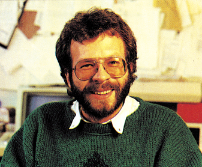

Mit Zuversicht …

geht’s weiter in der Computerbranche. Dies ist zumindest das Fazit, das man aus der größten europäischen Computerfachmesse, der CeBIT (Centrum für Büro- und Informationstechnik) in Hannover, ziehen kann. Allen Unkenrufen zum Trotz geht es nicht bergab, sondern im Gegenteil: Es scheint sich ein neuer Boom, insbesondere im professionellen Bereich anzubahnen.
Datenfernübertragung, noch mehr Computer-Power auf noch weniger Raum und je nach Produktgruppe mehr oder weniger starke Preissenkungen waren in Hannover die Themen.
Einer der am stärksten umlagerten Stände war der von Commodore. Nichts war mehr zu spüren von den Gerüchten der letzten Monate bezüglich der finanziellen Situation von Commodore; Euphorie bestimmte das Bild. Die Hauptattraktion war der Amiga, dessen Preis jetzt endlich offiziell feststeht: 5595 Mark. Dafür erhält man einen Amiga mit 512 KByte RAM, 256 KByte ROM, einem Diskettenlaufwerk mit 880 KByte Speicherkapazität, Farbmonitor und Maus. Für alle, die noch ein wenig warten wollen: In deutscher Version soll es den Amiga ab Sommer diesen Jahres geben. Auf den für den privaten Anwender doch recht hohen Preis angesprochen meinte man bei Commodore, es sei nicht auszuschließen, daß es einmal einen preiswerteren Computer geben könne, der über viele der tollen Grafik- und Soundeigenschaften des Amiga verfügen werde.
Laut Commodore sei mit dem C 128 die erfolgreichste Einführung eines Commodore-Computers gelungen: Innerhalb von nur 6 Monaten seinen 600 000 Commodore 128 abgesetzt worden, 75 000 davon in Deutschland.
Nach wie vor ist der Commodore 64 der am meisten verkaufteste Computer in Deutschland — und so scheint’s auch zu bleiben: Verkaufszahlen der letzten Monate und Vorbestellungen sprechen eine deutliche Sprache. Doch dies scheint Commodore nicht genug zu sein: Speichererweiterungen und ein neues Betriebssystem sollen den meistverkauftesten Computer der Welt noch interessanter machen.
Was es im Detail an neuen, interessanten Produkten auf der CeBIT zu sehen gab und welche Trends wir in Hannover festgestellt haben, lesen Sie in dieser und noch ausführlicher in der nächsten Ausgabe.
Michael Scharfenberger, Chefredakteur